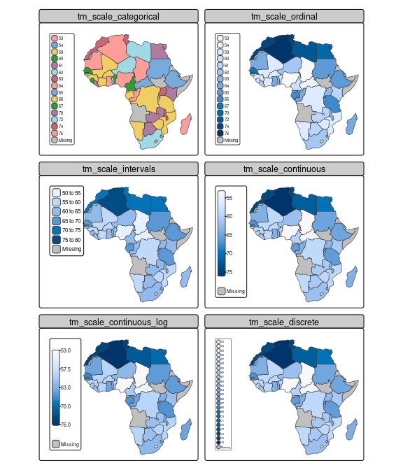
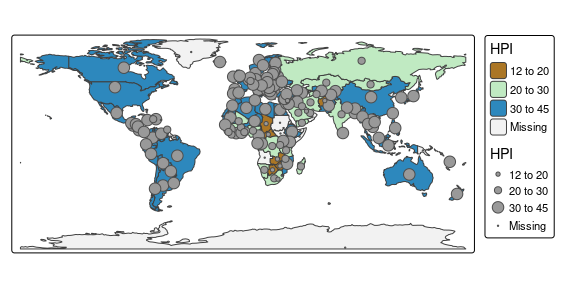

Scales
Each visual variable and each transformation variable can be scaled with one of the tm_scale_ functions.
To illustrate the different options, we show life expectancy across Africa, which we round in order to use the categorical scales as well.
Like tmap 3.x, it is possible to create facets by specifying multiple data variable names and scales to one visual (or transformation) variable, in this case "fill":
tm_shape(Africa) +
tm_polygons(rep("life_exp", 6),
fill.scale = list(tm_scale_categorical(), tm_scale_ordinal(),
tm_scale_intervals(), tm_scale_continuous(),
tm_scale_continuous_log(), tm_scale_discrete()),
fill.legend = tm_legend(title = "", position = tm_pos_in("left", "top"))) +
tm_layout(panel.labels = c("tm_scale_categorical", "tm_scale_ordinal",
"tm_scale_intervals", "tm_scale_continuous",
"tm_scale_continuous_log", "tm_scale_discrete"),
inner.margins = c(0.05, 0.4, 0.1, 0.05),
legend.text.size = 0.5)
Both tm_scale_categorical() and tm_scale_ordinal() treat data as categorical, so ignoring the fact that they are actually numbers.
The only difference is that categorical does not assume any order between the categories, whereas ordinal does.
This is similar to factors in R which can be ordered or not.
The other shown scales can only be applied to numeric data.
Note that in this example the breaks of tm_scale_intervals() are similar to the tick marks of tm_scale_continous().
However, when using class intervals only a few colors are used (in this case six plus a color for missing values) whereas in a continuous scale a gradient of colors is used.
The advantage of using class intervals is that it is relatively easy to read data values from the map, e.g. the value of South Africa is 55 to 60, while the advantage of using a continuous color scale is that the colors in the map are more accurate (because they are unrounded).
For tm_scale_intervals() it is possible to chose how to determine the breaks (with the argument style).
For tm_scale_continous() it is possible to use a transformation function: in this case the built-in log transformation is also shown (which is pretty useless for this particular example because of the data range).
Finally, tm_scale_discrete() uses a discrete linear scale.
Note that this is different than tm_scale_ordinal(), which does not use colors for values that are not present (as categories), for instance 53.
Each tm_scale_*() function can (in principle) be applied to any visual or transformation variable.
Note that this is different from ggplot2 where scales are organized by variable and by type (e.g. ggplot2::scale_fill_continuous()).
This is related to another difference with ggplot2.
In tmap, the scales are set directly in the map layer function to the target visual/transformation variable, for instance, tm_polygons(fill = "x", fill.scale = tm_scale_continuous()).
In ggplot(), scales are set outside the layer functions.
Each tm_scale_ function has (at least) the following arguments: values, values.repeat, values.range, values.scale, value.na, value.null, value.neutral, labels, label.na, label.null, and label.format.
The value* arguments determine the visual values to which the data values are mapped.
In case the scale is applied to a visual variable that represents color, they take color values or a color palette.
However, if, for instance, the same scale is applied to line width, then values should be numeric values that represent line widths.
This is illustrated in the following example:
tm_shape(World) +
tm_polygons(fill = "HPI", fill.scale = tm_scale_intervals(values = "scico.roma",
value.na = "grey95",
breaks = c(12,20,30,45))) +
tm_symbols(size = "HPI", size.scale = tm_scale_intervals(values = c(0.3,0.5, 0.8),
value.na = 0.1,
breaks = c(12,20,30,45)),
col = "grey30")
The defaults for those value.* arguments are stored in the tmap options. For instance
tmap_options("values.var")$values.var$fill
#> $seq
#> [1] "-hcl.blues3"
#>
#> $div
#> [1] "pu_gn_div"
#>
#> $unord
#> [1] "cols4all.area7"
#>
#> $ord
#> [1] "-hcl.blues3"
#>
#> $cyc
#> [1] "tol.rainbow_pu_rd"
#>
#> $biv
#> [1] "pu_gn_bivs"contains the default color palettes for the visual variable "fill" for different types of data.
For instance, when data values are all positive numbers, and tm_scale_intervals() or tm_scale_continuous() is applied, the default color palette is "-hcl.blues3", as can be seen in the examples above.
Regarding the available color palettes: tmap uses the new R package cols4all which contains a large number of well-known color palettes.
Please run cols4all::c4a_gui() which starts an interactive tool (the successor of tmaptools::palette_explorer()).
Of course, also own color palettes can be loaded directly via a vector of color codes.